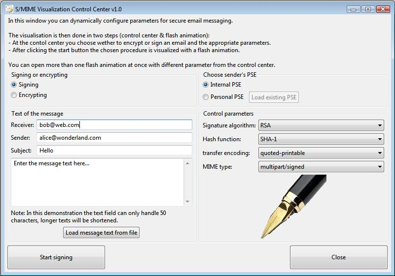
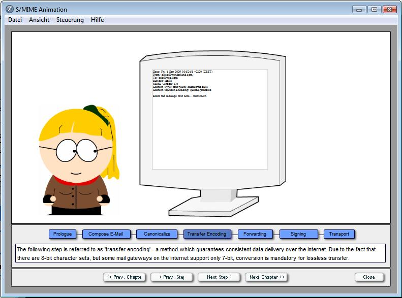
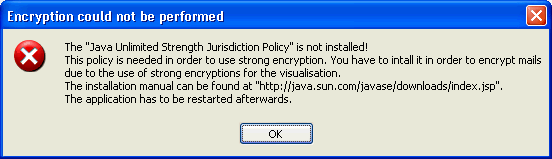

This visualization of a secure e-mail shows how to sign and encrypt an e-mail according to the S/MIME standard.
This visualization uses two windows appearing one after another:
All data structures and visualizations are executed dynamically based on the given data.
Restriction: The message text is truncated to a length of 50 characters to make sure it does not exceed the display area within the Flash animation.
The concepts of PKI, certificates, hash algorithms, encryption and digital signatures are explained, because these concepts are used in e-mails according to the S/MIME protocol.
The comprehensible visualization with modern animation software is an appropriate way to achieve user awareness, because secure e-mail is an important component for preserving privacy and for defending man-in-the-middle attacks and phishing.


The foundation of text-based e-mail traffic was already established in 1982 by two standards:
Because e-mails are passed on between different networks that are possibly communicating with different protocols, gateways are used as nodes to connect these networks. An e-mail gateway triggers the temporary storage of an e-mail and its delivery to the target.
E-mails nowadays often contain attachments exceeding pure text, for example various attachments in binary format. Therefore the standards mentioned above were expanded by the MIME standard (Multipurpose Internet Mail Extensions) specified in [RFC2045 to 2049].
S/MIME (Secure Multipurpose Internet Mail Extensions) is a further expansion of MIME, adding the possibility of digital signatures and encryption. S/MIME is based on the format of the Cryptographic Message Syntax (CMS) specified in the Public Key Cryptography Standards (PKCS #7). S/MIME can be used for encrypted e-mails as well as encrypted communication via http. The following table shows some of the algorithms used in S/MIME v3.1:
| Algorithm | S/MIME v3.1 mandatory, optional |
| Hash algorithms | SHA-1, MD5 |
| Signature algorithms | DSA, RSA |
| Public key encryption | RSA, Diffie-Hellman (RFC2631) |
| Symmetric algorithms | 3DES, AES |
Literature:
[1] Wikipedia, article on S/MIME: http://en.wikipedia.org/wiki/S/MIME
[2] RFC822 - STANDARD FOR THE FORMAT OF ARPA INTERNET TEXT MESSAGES: http://www.faqs.org/rfcs/rfc822.html
[3] RFC821 - Simple Mail Transfer Protocol: http://www.faqs.org/rfcs/rfc821.html
[4] RFC2631 - Diffie-Hellman Key Agreement Method: http://www.faqs.org/rfcs/rfc2631.html
Remark 1:
The control center is written in Java SWT and requires at least Java 1.5. The Bouncy Castle (BC) Cryptographic Library is used for cryptographic routines, it also serves as additional Security Provider for Java.
In order to use encryption keys of arbitrary length, the "unrestricted policy files" need to be installed before using BC. You can obtain these files from http://java.sun.com or http://java.sun.com/javase/downloads/index.jsp respectively. To install these files, rename the old JAR files local_policy.jar and US_export_policy.jar in C:\program files\Java\jre6\lib\security and use the new ones instead.
Remember to restart the control center.
If the Java Cryptography Extension (JCE) "Unlimited Strength Jurisdiction Policy" is not installed, you get the following message:

Remark 2:
In the Flash animation the Windows pixel font Bavaria Extended is used to display all dynamic content.
If this font is not installed, you can still read the text but the highlighted areas will not always be
at the right place. This font can be used freely for non-commercial purposes.
Source:
http://pixelfonts.style-force.net/download/bavaria-extended/
Installation of fonts under Windows requires the following steps: